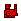

小金魚 | 怪物猎人双十字
小金魚 - 【MHXX】怪物猎人双十字
| 名称 | 小金魚 こ色んぎょ |
||||
|---|---|---|---|---|---|
| 稀有度度 | 4 | 所持 | 99 | 売値 | |
| 説明 | 全身黄金的小振り的珍魚。高値で取引されている。 | ||||
| [入手] 随从猫任务 区域报酬 |
[モン] 【下位】随从猫任务-海岸-魚 通常 [モン] 【下位】随从猫任务-海岸-魚 稀有度 [モン] 【下位】随从猫任务-海岸-魚 稀有度 [モン] 【上位】随从猫任务-海岸-魚 通常 [モン] 【上位】随从猫任务-海岸-魚 稀有度 [モン] 【上位】随从猫任务-海岸-魚 稀有度 [モン] 【G级】随从猫任务-海岸-魚 通常 [モン] 【G级】随从猫任务-海岸-魚 稀有度 [モン] 【G级】随从猫任务-海岸-魚 稀有度 |
| [入手] 地图 |
[下位★古代林] 3-1 釣り ∞回 15% [上位★古代林] 3-1 釣り ∞回 15% [G级★古代林] 3-1 釣り ∞回 10% [下位★旧沙漠] 4-1 釣り ∞回 20% [下位★旧沙漠] 9-1 釣り ∞回 20% [上位★旧沙漠] 4-1 釣り ∞回 20% [上位★旧沙漠] 9-1 釣り ∞回 20% [G级★旧沙漠] 4-1 釣り ∞回 15% [G级★旧沙漠] 9-1 釣り ∞回 15% [下位★森丘] 11-1 釣り ∞回 15% [上位★森丘] 11-1 釣り ∞回 10% [G级★森丘] 11-1 釣り ∞回 10% [下位★雪山] 1-1 釣り ∞回 20% [上位★雪山] 1-1 釣り ∞回 20% [G级★雪山] 1-1 釣り ∞回 15% [下位★溪流] 6-1 釣り ∞回 20% [下位★溪流] 7-1 釣り ∞回 15% [上位★溪流] 6-1 釣り ∞回 20% [上位★溪流] 7-1 釣り ∞回 15% [G级★溪流] 6-1 釣り ∞回 20% [G级★溪流] 7-1 釣り ∞回 15% [下位★孤岛] 10-1 釣り ∞回 8% [上位★孤岛] 10-1 釣り ∞回 5% [G级★孤岛] 10-1 釣り ∞回 5% [下位★沼地] BC-1 釣り ∞回 10% [下位★沼地] 3-1 釣り ∞回 10% [上位★沼地] BC-1 釣り ∞回 10% [上位★沼地] 3-1 釣り ∞回 10% [G级★沼地] BC-1 釣り ∞回 10% [G级★沼地] 3-1 釣り ∞回 10% [上位★遗迹平原] BC-1 釣り ∞回 15% [上位★遗迹平原] 10-1 釣り ∞回 15% [G级★遗迹平原] BC-1 釣り ∞回 15% [G级★遗迹平原] 10-1 釣り ∞回 15% [上位★原生林] 3-1 釣り ∞回 30% [G级★原生林] 3-1 釣り ∞回 25% [上位★沙漠] 1-1 釣り ∞回 10% [上位★沙漠] 6-1 釣り ∞回 10% [上位★沙漠] 7-1 釣り ∞回 15% [G级★沙漠] 1-1 釣り ∞回 10% [G级★沙漠] 6-1 釣り ∞回 10% [G级★沙漠] 7-1 釣り ∞回 15% [上位★密林] BC-1 釣り ∞回 10% [上位★密林] 9-1 釣り ∞回 20% [G级★密林] BC-1 釣り ∞回 10% [G级★密林] 9-1 釣り ∞回 15% [上位★遗群岭] BC-1 釣り ∞回 10% [上位★遗群岭] 3-1 釣り ∞回 10% [G级★遗群岭] BC-1 釣り ∞回 10% [G级★遗群岭] 3-1 釣り ∞回 10% |
| [入手] 任务报酬 |
[副任务] 村★2森丘的大刺身鱼 20% [主任务] 村★4沼地是个好钓场？ 100% [主任务] 村★4沼地是个好钓场？ 1% [副任务] 集★2采集调合素材！ 20% [主任务] 集★3想吃鱼吃到饱 100% [主任务] 集★3想吃鱼吃到饱 1% [主任务] 集★5孤岛的钓鱼大战！ 100% [主任务] 集★5孤岛的钓鱼大战！ 1% [主任务] 斗技大会★夜鸟讨伐 20% [主任务] 斗技大会★白电龙讨伐 20% [主任务] 斗技大会★绞蛇龙讨伐 20% [主任务] 斗技大会★雄火龙讨伐 20% [主任务] 斗技大会★跳狗龙讨伐 20% [主任务] 斗技大会★毒怪鸟讨伐 20% [主任务] 挑战★泡狐龙讨伐 20% [主任务] 挑战★斩龙讨伐 20% [主任务] 挑战★巨兽讨伐 20% [主任务] 挑战★电龙讨伐 20% [主任务] 挑战★海龙讨伐 20% [主任务] 挑战★雷狼龙讨伐 20% [主任务] 挑战★黑蚀龙讨伐 20% [主任务] 挑战★轰龙讨伐 20% [主任务] 挑战★雄火龙讨伐 20% [主任务] 挑战★迅龙讨伐 20% [主任务] 挑战★赤甲兽讨伐 20% [主任务] 挑战★水兽讨伐 20% [主任务] 挑战★白兔兽讨伐 20% [主任务] 挑战★大怪鸟讨伐 20% [主任务] 挑战★青熊兽讨伐 20% [主任务] 挑战★大连续狩猎1 20% [主任务] 挑战★大连续狩猎2 20% [主任务] 挑战★大连续狩猎3 20% [主任务] 挑战★大连续狩猎4 20% [主任务] 挑战★大连续狩猎5 20% |
| [用途] 武器 |
 结云鉈2 [強化] 2个 结云鉈2 [強化] 2个  秩序细剑3 [強化] 10个 秩序细剑3 [強化] 10个  ゴルトリコーダー [強化] 10个 未解を定める棍 [生产] 3个 未解を定める棍 [生产] 3个 |
| [用途] 防具生产 |
 鱼鳞腰甲 [生产] 2个 鱼鳞腰甲 [生产] 2个  鱼鳞S腰甲 [生产] 4个 鱼鳞U腰甲 [生产] 4个 鱼鳞S腰甲 [生产] 4个 鱼鳞U腰甲 [生产] 4个 |
| [用途] 装饰品 |
友爱珠【1】 [生产] 2个 弹制珠【1】 [生产] 2个 |